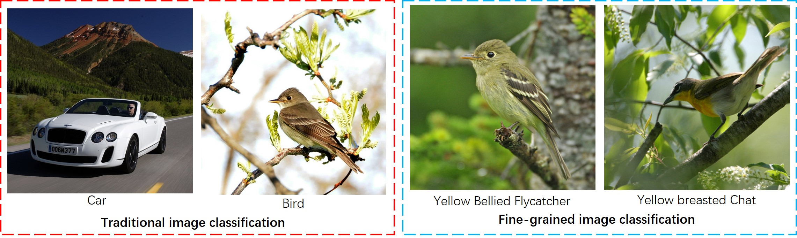
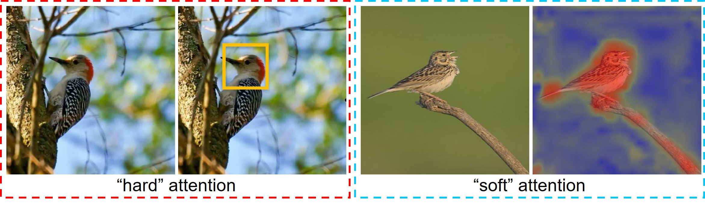
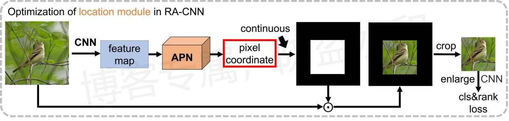
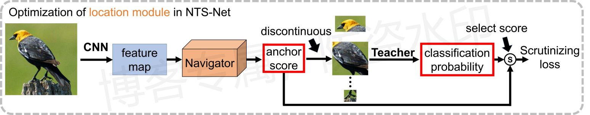
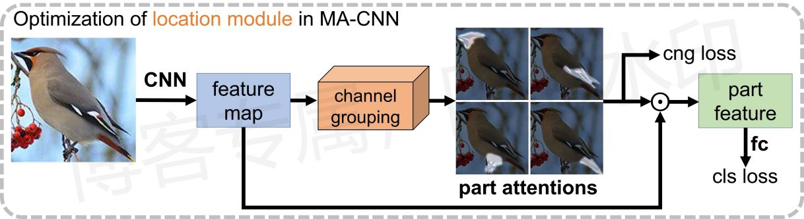
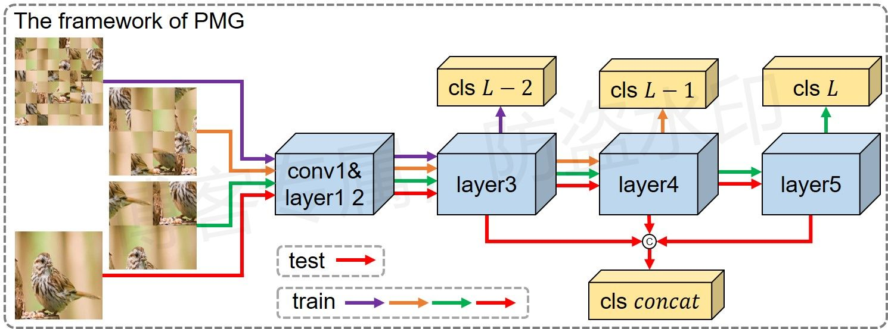
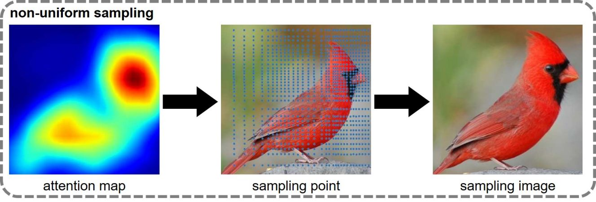
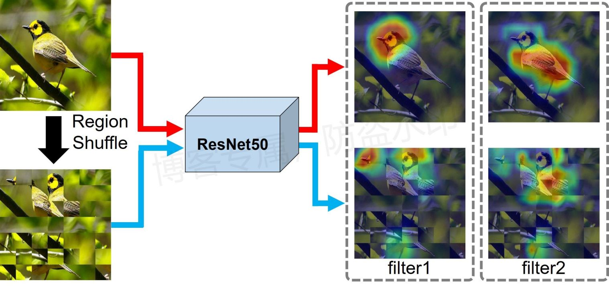

细粒度分类总结¶
注：全文原创，未经允许，禁止转载！
概述¶
细粒度图像分类任务是对一个大类别中的子类别进行识别、分类。与传统的图像分类不同，细粒度分类任务中的图像往往具有较大的类间相似性与较大的类内差异，即属于不同类别的物体往往具有相似的形态与特征，而属于同一类别的物体图像由于光照、背景、遮挡以及拍摄角度的不同，往往会具有较大的视觉差异，如下图所示，区分图片中的物体属于“车类”还是属于“鸟类”非常容易，但是如果需要识别图片中的鸟是属于“Yellow Bellied Flycatcher”还是属于“Yellow breasted Chat”，则往往需要模型具有相对较强的识别能力。

想要正确鉴别不同的类别，就要求网络具有捕捉细微差异的能力，因此传统的细粒度识别算法往往需要额外的区域标签，通过对一些辨识性高的区域进行人工标注，从而辅助训练网络捕捉细节的能力，但这不仅需要较高的成本，还具有一定主观因素的干扰（如区域位置、数量等等），限制了模型的进一步学习，通俗来讲就是如果一个物体具有四处可辨识性的区域，但是人工标注时只标注了三处，则在模型的训练过程中就会少学习一个区域，或者人工标注时区域位置标注的不准，也会限制模型的训练，利用额外人工标注的学习策略统称为强监督学习。相比于基于强监督学习的算法，基于弱监督学习的方法（只使用图像类别标签）更适合实际的推广应用，下文所总结的内容全是基于弱监督学习的算法。
方法总结¶
基于注意力¶
注意力又分“硬”注意力（hard attention）和“软”注意力（soft attention），其中硬注意力侧重于得到具体的关键区域位置，例如边界框、分割掩码等等，软注意力侧重于关注对象的空间分布，得到一张注意力图，注意力图上响应值的大小反应了区域的重要程度，具体如下图所示：

该方法的主要思路就是先得到注意力图，定位出有区分度的区域（discriminative region），以下简称关键区域，之后基于定位到的关键区域再执行其他的操作，最常见的操作就是再分类，利用子区域的分类损失提升模型的特征表示能力（feature representation）。基于注意力思想的算法研究最关键的就是解决：如何获得注意力这一问题，而获得注意力的途径主要有两种方式：分析特征数据、利用特征做预测。为了方便起见，将下文中产生注意力的模块统称为定位模块，用于定位关键区域。
分析特征图数据¶
该类方法相对来说较为简单，不额外设单独的参数去预测区域，只分析特征图数据，利用某种固定的运算规则计算出特征图的关注区域，这种方法大部分会直接得到软注意力图。
由于卷积运算具有局部性，只在局部区域提取特征，并且特征提取网络在训练的过程中受分类任务所驱动，所提取的特征和物体类别息息相关，因此网络自然地会关注对分类任务有利的区域，这也是我们所熟知的“分类网络具有一定的弱定位能力”，我们可以利用这一特点来获得软注意力图，最简单的方法就是沿通道维度将特征图相加（如：MMAL），或者利用规定的公式计算特征图的相关性（如：TASN），进一步得到软注意力图，注意力图上特征数据的分布可以看成区域重要程度，所得的注意力图可以在一定程度上反应物体的区域分布，但是这种方法只考虑了特征数据这一单一因素，最终效果可能并不理想。
网络所提取的特征，是面向所有类别的特征，如果可以将该特征转化为某个具体类别的，那么可以在一定程度上提高注意力图的关注能力，比如如果一张图中是鸟A，那么可以将所提取的特征转化为A类特定的特征，在S3N中，作者利用全连接层中的权重对特征图沿通道方向做加权求和，生成所有类别对应的注意力图（文中指响应图），最后根据模型对整张图的预测情况来选择使用哪个类别的注意力图。
除了利用所学的参数，还可以利用梯度，比如在MGE-CNN中，作者利用Grad-CAM算法来实现定位功能，将对最终的物体分类贡献大的特征区域视为分类的关键区域，利用卷积层的梯度信息去理解每个神经元对于决策的重要性，从而获得特征图中每个位置上的特征对物体分类的贡献，贡献分数越大，则表明该特征所对应原图上的区域越重要，最终网络根据特征的重要程度划分出理想的注意力关注区域，之后再做后续处理。
上述方法由于不需要设置额外的损失来监督，因此实现起来较为简单。但这一类方法有一个很大的缺点——注意力图的生成具有单向依赖性，所得注意力图的好坏很大程度上依赖于网络的特征提取能力，如果网络特征提取能力好，那么自然就会得到很好的定位结果，但细粒度分类中，由于类之间物体差异很小，网络很难直接提取到有用的特征，因此只通过分析特征图数据做定位的话，定位效果并不明显。
利用特征做预测¶
该方法相对来说较为高效，通过设定额外的定位模块来专门做关键区域的定位，利用特征图数据来做预测，定位出区分度高的区域，同时如果定位模块可以和后续子分类模块相联系起来，则可以起到双向优化的作用，网络区域定位能力的学习和特征提取能力的学习可以互相促进、互相提升。（相当于引入注意力机制）
硬注意力¶
因为硬注意力所体现的形式大多为离散分布的坐标点或者掩模图，数据分布不连续，因此如果需要网络来预测硬注意力，则面临一个问题——需要对定位模块做监督，单纯只用分类损失的话无法优化定位模块，所定位的区域很难达到理想的效果，但由于弱监督学习方法没有额外的标注，因此不能直接作监督，因此在设定定位模块的同时，需要挖掘隐含的关系条件，进一步设定额外的损失去优化定位模块的参数。
在RA-CNN中，作者直接在特征提取网络中嵌入多层感知机（即线性回归层），回归出可以定位对象区域的坐标点（即区分对象的关键区域），为了使该模块可以得到有效地监督，这里得到坐标点后不直接对原图做裁剪，先利用二维脉冲函数近似出四个坐标点所代表的区域，相当于将回归得到的坐标点转化成一张注意力图（四个坐标点数据化为一张数据连续分布的图），之后再将这张图与原图相乘，定位出关注的区域，将回归出来的坐标与原始特征图强加关联，如果直接裁剪的话前向传播是间断的，梯度无法传回来，也就是后续的操作无法影响回归层对关键区域的定位。关联后的图片在反向传播的过程中存在一个梯度传递的过程，即经过注意力近似操作可以让后续的网络知道这个区域是如何被定位的，最终的图片分类损失以及尺度间的排序损失可以经过反向传播来优化定位模块，也就是优化那几层线性回归中的参数。这里很像自注意力操作（self-attention），利用特征图生成注意力图（以坐标为中介），注意力图再反作用于特征图。

想要获得关键区域的边界框坐标，也可以参考目标检测中滑动窗口的思想，在NTS-Net中，作者利用滑动窗口去检测区域，类似Faster R-CNN中的RPN模块，先预设一组锚点框，之后预测出每个锚点框的分数（这里就是定位模块），注意，由于没有真实区域标签，因此这里只预测分数，不预测边界框回归参数，只能利用锚点预设的情况，预测出大概的位置，并且分数越高表明子区域对最终的分类情况越有利（越关键），之后按分数大小选择后续子区域。问题的核心就在于如何优化定位模块，也就是优化锚点打分模块，让打分模块分数打的更准，分数越准，说明后续预测情况与所打的分数越具有正相关性，即如果分数越大，则正确类别的预测概率应当越大，因此可以根据这一条件，筛选出指定的区域分数，利用分数之间的排序损失对原模块做优化，梯度会沿分数产生的路径传回定位模块，从而优化定位模块，使其打的分数和子网络预测概率顺序一致。

注：在特征图上预设检测窗口的思想在MMAL算法中也有所应用，不过为了避免优化麻烦，该算法利用全卷积层（full convolutional）来实现滑动窗口，只根据卷积提取到的特征数据来决定哪个窗口代表的区域为关键区域。（该方法只需要分析特征图数据，可利用池化操作实现特征的局部求均值目的）
对于硬注意力，最主要的就是表示出关键区域，之后再单独对关键区域做特征提取、分类操作，提升网络的特征提取能力。但是要注意一个核心点：一定要有损失能够优化到定位模块。常见的裁剪操作属于间断操作，子区域分支只会看到裁剪后的特征，不会看到裁剪坐标，因此子区域分类损失所产生的的梯度不会沿着坐标回传（这条路中分类损失产生的影响就回不到定位模块了），只能沿着特征回传，一定要捋清概念。当子区域分类结果可以和定位模块建立“连续”的联系，即子分支可以“看”到子区域的定位过程时，网络的训练就可以起到双向优化的作用，即定位的学习优化分类的学习（或细粒度特征表示的学习），并且分类的学习反过来促进定位的学习，关键就是找桥梁，思考如何连接两个部分。
软注意力¶
软注意力相比硬注意力来说，更容易优化，因为软注意力侧重于生成注意力图，注意力图上的响应数值都是连续分布的，只使用分类损失也可以对定位模块起到一定的监督作用，使得定位模块所关注的部分是对最后分类有用的区域，CNN中最常用自注意力机制来生成软注意力图，如CBAM算法中的通道注意力和空间注意力。在细粒度分类中，自注意力机制往往不会直接拿来用，还需要结合其他的损失做辅助优化，从而达到更好的关注效果。
想要鉴定一个类别往往需要依靠多个关键区域，因此需要网络可以定位多个区域，对应生成多个注意力图，在MA-CNN中，作者设置了多个注意力分支，同时生成多张注意力图去关注关键区域。每个分支设置全连接层，将特征向量（全局平均池化后）传入全连接层预测出一组权重，特征图再沿通道方向加权求和，得到注意力图，定位的核心就在于预测权重的全连接层，通过适当地加权求和可以使特征图关注正确的区域。如果只使用分类损失的话，多个注意力图必然有重叠的关注区域，因为所有分支都朝着有利于分类的地方关注，不知道其他分支的关注情况，即分支之间是独立无联系的，因此作者设计了分组损失使分支之间建立起联系，辅助监督定位模块，鼓励其产生的权重可以使局部注意力图具有多样性、紧凑性的特点。

除了使多张注意力图更加紧凑多样，还有一种监督方法就是对于不同的图片，使相同的注意力图去关注相同的部位。Cross-X中引入了OSME模块（出自论文MAMC），和MA-CNN类似，设计多个全连接层，通过生成权重对原始特征图沿通道方向做加权操作，得到多组新特征，文中指激励块。为了鼓励相同的激励块去关注相同的部位，即具有相同的语义信息，作者利用相关性矩阵来衡量不同激励模块之间的相似度，相似度高的激励块表示关注区域类似，在同一batch内，通过提高相同激励块之间的相似度以及降低不同激励块之间的相似度来鼓励相同的激励模块去关注相同的部位，WS-DAN中的注意力正则化损失也有类似的目的。
总而言之，定位模块千篇一律，生成注意力图的方法有很多，简单到一层卷积就可以实现（如WS-DAN），定位模块的优化才是核心，需要始终围绕一个思想：想要使注意力图达到什么样的关注效果，就需要对应设计什么样的损失做辅助优化，单凭分类损失不易使注意力达到理想的效果。
得到软注意力图之后，可以执行多种操作：
- 可以将注意力图与特征图做点乘操作，强化所关注区域的特征，抑制无关区域的特征，并且前向传播是连续的，因此区域定位的学习和特征表示的学习可以相互促进；
- 可以转化为硬注意力，如MGE-CNN、WS-DAN中设定一个阈值，将响应值大于阈值的区域划分出来，MA-CNN中选取峰值响应坐标作为中心，裁剪出一个矩形框作为子区域。但是转为硬注意力的过程是不是“连续”的，是间断的，因此后续子区域的分类损失不会影响定位过程。（划分区域时用到大于运算，并且峰值响应点是直接选取，二者函数都不连续，无法求导）；
- 可以参考B-CNN中的双线性池化操作，充分将每张注意力图和特征图融合（也就是所有注意力图逐一和所有特征相乘，再全局池化），之后传入全连接做运算，例如WS-DAN算法，但是双线性池化有个缺点，生成的数据维度过大，全连接层参数过大，不易优化，容易过拟合，对此可参考Graph-based算法，利用图神经网络做化简操作；
- 可以做非均匀采样，放大局部的关键区域，如S3N和TASN，但这两个算法的采样过程都是间断的，因此注意力图的生成只能通过分析特征数据得到。
补充：
- 为了进一步提升注意力的关注能力，使网络提供更有效的注意力图，在CAL中作者提出了一种基于因果推理的反事实注意力学习方法（反事实注意力也就是随机生成的注意力图），可以让网络学到更有效的注意力，通过比较事实注意力和反事实注意力对最终的影响来评估注意力的质量，同时最大化二者的差异来鼓励网络学习更有效的视觉注意力（最大化正常注意力图和随机生成注意力图之间的预测差异）。
基于多尺度特征¶
在常见的特征提取网络中，深层特征具有较大的感受野，并且特征数据的语义信息丰富；而浅层特征具有较小的感受野，并且特征数据的语义信息较为匮乏，因此在传统的分类任务中我们常常使用最深层的特征来做类别预测，并且丢弃浅层特征。在细粒度分类任务中，一个核心的问题就是如何让网络捕获图像中的细微差异，这些细微差异往往仅存在于原图很小的区域，而浅层特征感受野小，可以代表原图比较小的区域，因此我们可以利用这一特点，也让浅层特征参与模型的决策，有助于提升模型捕获细微差异的能力，进一步提升准确性能。细粒度分类算法常使用中间阶段的特征图参与预测，以下简称中级特征（mid-level feature），深层特征简称高级特征（high-level feature）。
对于利用中级特征，最简单的方式就是引入子分类器来针对中级特征做分类，之后利用分类损失来优化网络参数，例如在算法SPS中就应用了这一策略，但是直接应用分类损失去优化网络往往得不到较为理想的效果，作者进一步系统分析了这一方法的缺陷，主要就是存在局部过拟合的问题，网络仅仅依赖于图片中少量的区域来决定物体的类别，模型容易被少数具有高辨识力的特征所支配，降低了模型的泛化能力。为了改善中级特征表示，提高中层网络的特征提取能力以及中层模型的鲁棒性，作者在训练过程中引入了随机交换方法，随机交换不同样本之间的特征（沿batch方向），一旦高置信度区域特征和其他样本的低置信度区域特征交换，就会抑制某些过度自信的神经元，从而缓解区域过拟合问题，进一步改进中级特征的特征表示。
为了充分利用多尺度特征的优势，可以通过探索不同尺度特征之间的联系、促进多尺度特征融合来最大化改善网络的性能，如目标检测中的FPN模块，设计自顶向下以及横向连接的结构，将不同尺度的特征加以融合，提升浅层特征的语义信息，之后利用融合后的特征同时检测大物体和小物体。Cross-X中，作者也用到了这一思想，设计横向连接，用于融合中级和高级的特征数据，使得融合后的特征具有精细空间分辨率特性和丰富的的高级语义特性。同时，还利用KL损失去匹配不同层特征之间的预测分布，用于提高多尺度特征的鲁棒性。
最后，我们引入中级特征就是为了使网络可以更好地关注粗粒度特征之外的细粒度特征，即局部的微小差异，但是在实际应用中，粗粒度特征往往会包含一部分细粒度特征，如果直接学习整幅图像的中级特征，网络容易受到粗粒度信息的干扰，所学习到的细粒度特征很容易集中分布于粗粒度特征附近（关注区域重叠）。因此，为了使网络独立地在指定特征层的基础上学习指定粒度级别的特征，作者在PMG算法中引入了随机打乱的思想，将图片均匀划分成图片碎片，并且打乱重组，其中碎片大小与特定的粒度一一对应，迫使网络在不同阶段关注不同大小的区域，从而学习指定粒度级别的特征，并且还应用渐进训练策略来让网络充分探索尺度之间的互补关系。最后，在测试过程中，将完整图像多个尺度的特征图沿通道方向合并，一次性传入全连接层，使网络充分参考所有粒度级别的特征做类别预测。

其他方法¶
非均匀采样¶
非均匀采样就是在原图上做不均衡的采样操作，这里可以对比均匀采样理解，直观来看均匀采样相当于对原图的等比放缩，不会在视觉上改变图像形状，而非均匀采样由于是不均衡采集像素点，因此会改变图像的形状，采样点密的地方会被放大（类似利用放大镜观察密集采样区域），例如下图放大了头部区域：

在基于注意力的方法中，注意力图的关注区域往往只集中在一部分区域，大部分算法往往喜欢将该区域裁剪出来，进一步再对子区域做分类，但是直接裁剪原图的话会丢失一部分上下文信息，容易影响最终的特征表示。相比而言，对原图做非均匀采样最大的好处就在于既突出了原图的关键区域，凸显了细粒度细节，又保留了相对不相关的区域。
而非均匀采样前提就是得到采样图，也可以看作注意力图，用于指明在哪里采样力度大（对应关键区域），进一步得到具体的采样点，对某一区域进行集中采样，以高分辨率的方式更好地描述原始图像中的关键区域，从而更好地辅助网络做类别决策。算法TASN和算法S3N均用到了这一思想，其中在S3N中，作者并没有直接选取响应图做为采样图，而是选取了响应图上的峰值响应点做为采样中心点，之后利用响应值计算高斯核，利用所得的高斯分布图作为最后的采样图。
注：
- 注意所用的非均匀采样方法是否是连续的，如果不连续，即无法用连续函数实现，则后续采样图像的分类损失无法优化定位模块（无法优化注意力图的生成），此时只能通过分析特征数据来得到注意力图；
- 非均匀采样类似于：注意力采样、显著性采样、选择性采样等；
- 如果采样点介于原图两个像素点之间，则一般会采用插值算法选取两点的插值结果；
- 虽然非均匀采样会改变图像物体的形状，但分类任务只要类别信息，和目标检测不一样，分类可以任意处理原始图像，只要结果有利得到分类结果就可以。
图像打乱¶
在细粒度分类中，局部细节要比全局结构起着更重要的作用，并且类之间全局结构的相似性较高（如CUB中所有的数据都是鸟，大体形状一样），为了在训练过程中抑制全局信息的干扰，一种比较新颖的方法就是打乱原始图片，破坏全局结构的同时保留局部细节，进一步迫使网络主要关注局部细节，从而辅助训练网络对细节的捕获能力，具体如下图所示：

但是单纯只学习打乱图像的话，也会有一些问题，论文DCL指出，在打乱原始图像的同时会引入一部分不确定的噪声模式（打乱图和完整图在视觉观感上不一样），而我们在训练过程中只希望网络学习打乱图中的局部细节，不希望引入这种噪声干扰，对此，受对抗学习中鉴别器（descriminator）的启发，作者在网络上额外引出了一条鉴别分支，用于鉴别输入图像是否被打乱，在一定程度上隔离两类图像，进一步抑制上述噪声的干扰。最后，为了使网络进一步理解每个区域的语义信息，作者还设计了恢复分支，将被打乱的图像恢复成原始图像，从而更好地使网络进行决策。
注：
- PMG算法中引入打乱操作是为了和利用中级特征做预测相结合，二者切入点不同，因此对于“打乱”这一操作有不同的理解角度。
双图对比学习¶
以往的细粒度分类算法大多数为单张图片学习法，即一张图一张图地学，但是单张图片所蕴含的种类信息有限，因此难以挖掘里面的精细特征。相反，人们在学习相似物体的分类时，常常通过比较两张图像来学习，通过对比观察图像中的细微差异，可以进一步理解每一张图片所蕴含的特征信息，从而对物体不同位置给予了不同程度的关注。对此API-Net算法首先提出双图对比学习的思想，首先利用欧氏距离衡量两幅图像特征的相似度，对于每幅图像，分别匹配类间相似度最高和类内相似度最高的图像特征，之后利用所匹配的成对特征生成门向量，又称图像之间的交互向量，之后再反作用于原始图像，类似通道注意力的通道权重，只不过这里的注意力权重是通过两组相似图像的特征生成的。通过上述学习，网络可以自适应地从一对细粒度图像中发现对比线索，并且通过成对交互模型区分它们。
注：
- 双图对比学习出发点很好，但是有一个缺点：训练时显存要求很高。比如在API-Net中，由于涉及类内类间相似度，因此论文默认每次采样采取30种类别，每个类别采4张图，batch至少需要设置120，后续每张图再匹配类内、类间相似的特征，参与运算的特征数据又会变为原来的2倍。
应对过拟合¶
细粒度分类任务还有一个明显的问题就是子物体图片难以获得，类别训练数据较少，再加上类间相似度高，容易产生过拟合的问题。降低了网络的泛化能力，不利于模型实际的推广。
在机器学习中，面对过拟合问题最常用的就是在训练过程中添加正则化器（如l_1、l_2正则化器），用于平滑训练过程，但是通用的正则化器并不直接适用于这里，需要具体问题具体分析。在PC算法中，作者具体分析了细粒度分类任务中所存在的问题，面对两张类别不一样，但是非常相似的图片，如果单纯利用传统的交叉熵损失去训练网络，强迫网络以高置信度的方式学习能够区分这两张图片的特征，网络为了最小化训练损失，可能会学习到特定于样本的特征（而非类别特征），进一步干扰网络对图片类别的判断。为了缓解这一矛盾，作者引入了混淆(confusion)的方法，通过最小化成对样本之间预测概率的分布，迫使网络去学习辨别性稍差的特征，进一步防止网络过度拟合基于样本的特征，提高泛化性能。
对于样本少这一现象，还会产生一种问题——网络可能过度依赖于某些特征，这也是过拟合问题的一种表象。对此，常用的方法就是从特征入手，例如DropOut算法，通过随机丢弃一部分特征来提升网络的泛化性能，使神经网络的节点不能依赖任何输入的特征。在SPS算法中，作者通过分析数据发现，细粒度分类任务也有这一问题，对此，作者提出了随机交换的方法，通过随机选择一个样本特征作为噪声源并且将它的一些特征元素与另一个样本相应位置的特征元素做交换（也就是随机交换两个样本的特征数据），来抑制某些主导预测的神经元，增强模型分类器的鲁棒性。
在定位模块的训练中也有体现（即注意力图的生成），如果网络过分关注某个区域而忽略了其他区域（关注点过于集中），也容易造成过度依赖的问题，一旦该区域被遮挡，则会严重影响网络的决策判断。对此，WS-DAN算法提出了注意力下降策略，利用生成的注意力图，删去某些关注的区域数据（和一般操作相反），再将其传入网络，强迫网络在其他区域学习区分类别的特征，抑制过度自信的区域。同时，在S3N算法中也有类似的操作，算法在非局部采样过程中会生成两个采样图，一个是在峰值响应大的地方做采样，提升网络细粒度特征提取的能力，另一个就是在峰值响应小的地方做采样，阻止了强特征对梯度的控制，从而实现使网络聚焦于多个关注点、提升图像特征表示多样性的目的（峰值响应表示响应图的局部极大值，类似山峰）。
参考算法¶
- CAL: Counterfactual Attention Learning for Fine-Grained Visual Categorization and Re-identification, ICCV 2021.
- SPS: Stochastic Partial Swap: Enhanced Model Generalization and Interpretability for Fine-grained Recognition, ICCV 2021.
- Graph-based: Graph-based High-Order Relation Discovery for Fine-grained Recognition, CVPR 2021.
- MMAL: Multi-branch and multi-scale attention learning for fine-grained visual categorization, MMM 2021.
- PMG: Fine-Grained Visual Classification via Progressive Multi-Granularity Training of Jigsaw Patches, ECCV 2020.
- API-Net: Learning Attentive Pairwise Interaction for Fine-Grained Classification, AAAI 2020.
- Cross-X: Cross-X Learning for Fine-Grained Visual Categorization, ICCV 2019.
- S3N: Selective Sparse Sampling for Fine-grained Image Recognition, ICCV2019.
- MGE-CNN: Learning a Mixture of Granularity-Specific Experts for Fine-Grained Categorization, ICCV 2019.
- DCL: Destruction and Construction Learning for Fine-grained Image Recognition, CVPR 2019.
- TASN: Looking for the Devil in the Details: Learning Trilinear Attention Sampling Network for Fine-grained Image Recognition, CVPR 2019.
- WS-DAN: See Better Before Looking Closer: Weakly Supervised Data Augmentation Network for Fine-Grained Visual Classification, arXiv 2019.
- NTS-Net: Learning to Navigate for Fine-grained Classification, ECCV 2018.
- PC: Pairwise Confusion for Fine-Grained Visual Classification, ECCV 2018.
- CBAM: CBAM: Convolutional Block Attention Module, ECCV 2018.
- MAMC: Multi-attention multi-class constraint for fine-grained image recognition, ECCV 2018.
- MA-CNN: Learning Multi-Attention Convolutional Neural Network for Fine-Grained Image Recognition, ICCV 2017.
- Grad-CAM: Grad-CAM: Visual Explanations from Deep Networks via Gradient-based Localization, ICCV 2017.
- RA-CNN: Look Closer to See Better: Recurrent Attention Convolutional Neural Network for Fine-grained Image Recognition, CVPR 2017.
- FPN: Feature Pyramid Networks for Object Detection, CVPR 2017.
- B-CNN: Bilinear CNN Models for Fine-grained Visual Recognition, ICCV 2015.
注：以上仅是笔者个人见解，若有问题，欢迎指正。
初步完稿于：2023年2月2日